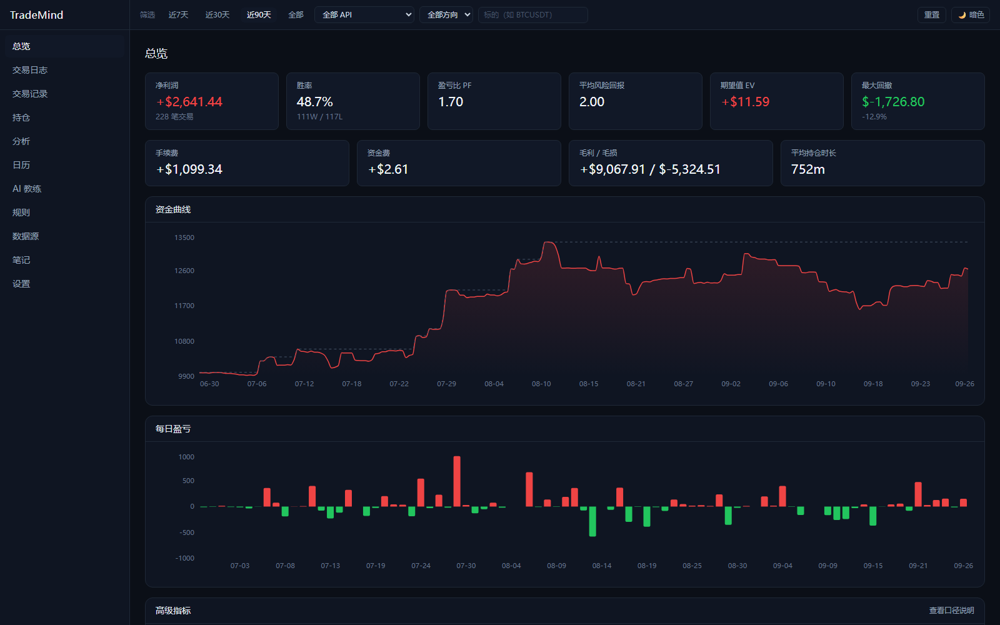
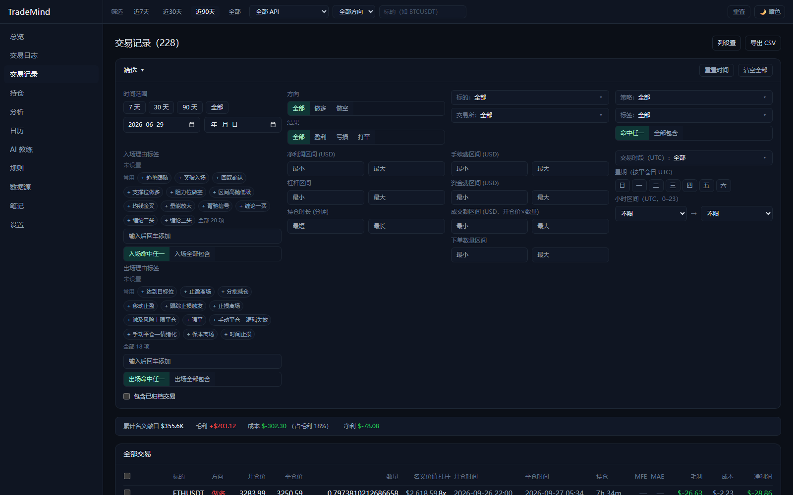
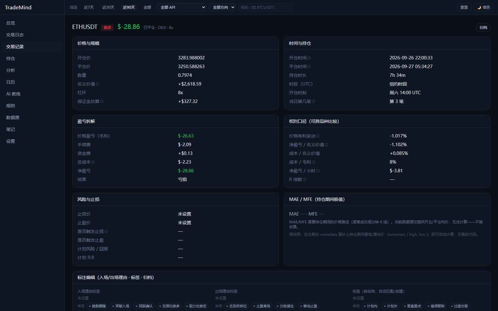
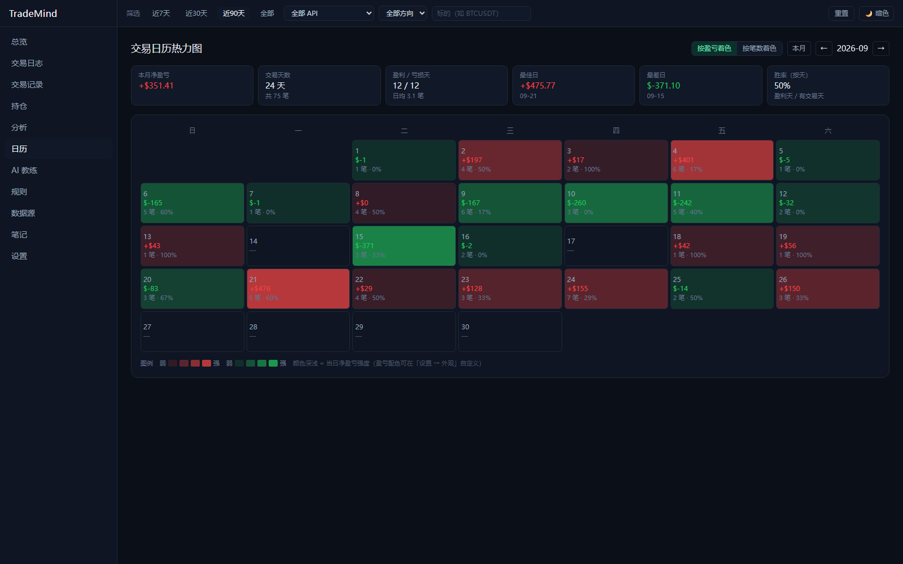
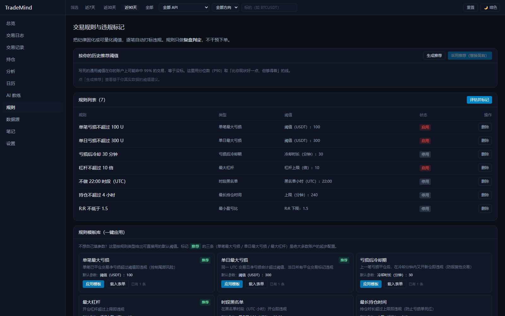
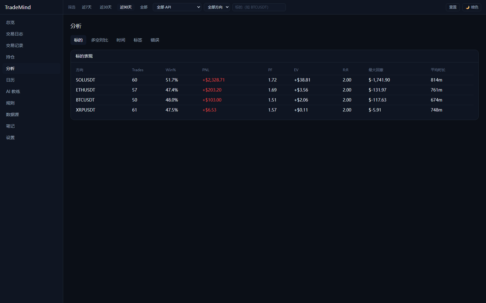
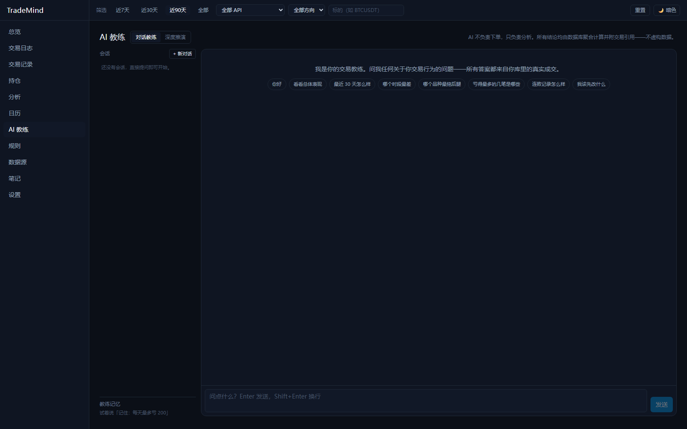
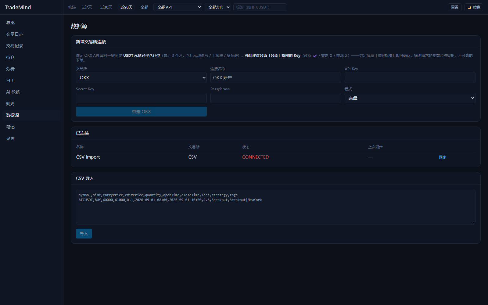
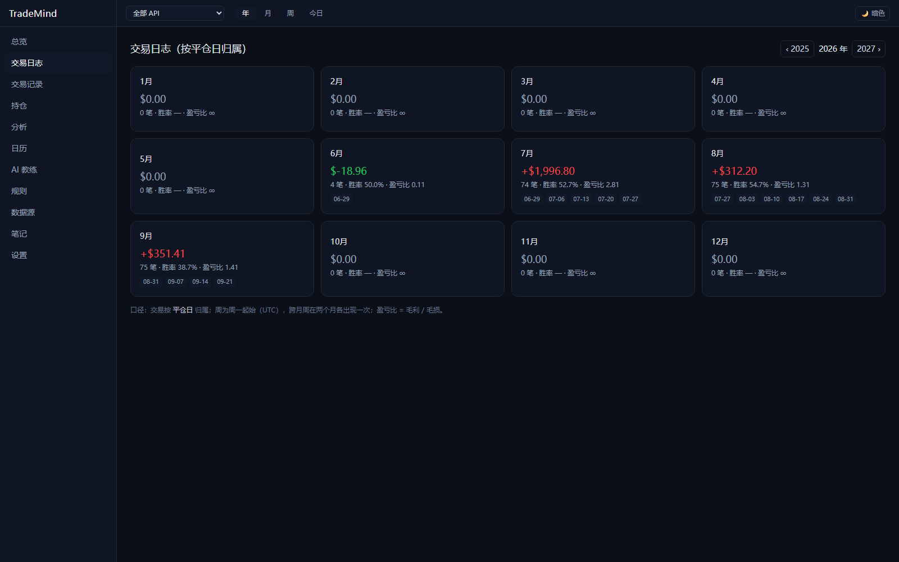

把每一笔交易
变成可复用的经验
TradeMind 是一款自托管的 AI 交易日志与分析平台。自动同步交易所成交记录， 把你的盈亏拆到标的、策略、时段、杠杆的每一层，再用规则引擎揪出那些你反复在犯的错。
解压即用，无需安装 Node.js 或数据库 · 约 137 MB

一个交易员真正需要的六件事
从把数据弄进来，到把教训留下来 —— 中间每一步都做成可以量化、可以回溯的。
数据接入
把手里的成交记录，变成可分析的结构化数据
- 交易所直连：OKX、Hyperliquid，填入 API 密钥即用；自动探测密钥权限（只读 / 交易 / 提币）并在界面提示风险
- 增量同步：可设间隔自动拉取，新平仓的成交自动进日志；同步完成后报告实际覆盖的时间区间
- CSV 批量导入：表头大小写不敏感，支持中英文同义词；优先按 externalTradeId 全局去重，无 ID 时按「交易所 + 账户 + 开平仓时间 + 标的 + 方向」复合去重
- 手动补录：单笔录入，适合场外或漏记的交易
交易日志与筛选
从上千笔交易里，一秒定位到你想复盘的那一批
- 18 类筛选条件：标的 / 方向 / 交易所 / 策略 / 标签 / 入场理由 / 出场理由 / 盈亏 / 杠杆 / 持仓时长 / 手续费 / 资金费 / 成交额 / 数量 / 星期 / 小时 / 时段 / 结果
- 三种标签匹配模式：任一命中、全部命中、以及排除
- 入场 / 出场理由体系：内置 20 个入场预设 + 18 个出场预设，也可自由输入
- 列设置与自定义列：任意列显隐，配置存在浏览器本地；可为标签建专属列，命中显示 ✔
- 批量操作：勾选后归档 / 取消归档 / 删除 / 打标签
- 导出 CSV：默认导出当前筛选的全部结果，带 BOM，Excel 直接打开不乱码
分析引擎
纯函数实现，口径可追溯，样本不足时绝不给假数字
- 核心指标：净盈亏（已扣手续费与资金费）、胜率、盈亏比 PF、期望值 EV、平均盈亏、平均 R:R、最大回撤、恢复因子、Calmar、夏普
- 七维拆解：标的 / 策略 / 交易时段 / 星期 / 持仓时长 / 多空方向 / Session（Asia · London · New York）
- 图表：资金曲线、每日盈亏、回撤区间
- 口径自洽：净盈亏 = 毛盈 − 毛亏 − 手续费 − 资金费 ≡ Σ 单笔净盈亏；样本不足时显示「—」并说明原因，不用 0 冒充
- 45 项单测保证每次改动都不会悄悄改变计算口径
日历与复盘
把「这个月做得怎么样」变成一个可以扫一眼的动作
- 月历视图：每个交易日按当日盈亏着色，赢亏一眼可见
- 月度汇总：6 张指标卡覆盖当月盈亏、笔数、胜率、最大回撤等
- 周 / 日复盘：自动汇总区间表现，直接插入你的复盘正文
- 笔记：随手记录行情判断与心态变化
规则引擎
把交易纪律写成可执行的规则，让违规无处可藏
- 规则模板库：常见交易纪律一键套用，不用从零描述
- 阈值不写死：按你自己的历史数据分布给出推荐值（例如杠杆上限取历史 P90），避免规则误伤自己
- 违规自动标记：命中规则即入库，可在交易列表里逐笔回溯「我是哪一步破的戒」
AI 教练
结论必须能指回具体某一笔交易，不接受空话
- 区间复盘：日 / 周 / 月，或任意自定义区间
- 反事实分析：量化「如果没有做这 12 笔会怎样」，精确到具体交易
- 强制引用：每条结论都附带真实交易引用，凭空生成的结论会被拦下
界面预览
以下截图取自内置的演示数据集（300 笔合成交易），点击可查看原图。








三步开始，约一分钟
不需要装 Node.js，不需要装数据库，不需要命令行。
下载压缩包
从 Release 页面 下载 TradeMind-Portable-v1.0.1.zip（约 137 MB）。
解压到纯英文路径
例如 D:\TradeMind。
路径里请不要出现中文 —— 内置数据库在中文路径下会初始化失败，这是 PostgreSQL 的限制。
双击 TradeMind.exe
首次运行会自动初始化数据库并写入演示数据，约需 30 秒；完成后浏览器会自动打开界面。
关掉窗口即停止服务。你的数据、配置和 API 密钥都保存在程序旁边的 data 目录里，下次打开不用重新输入。
| 环境变量 | 默认值 | 用途 |
|---|---|---|
| TRADEMIND_WEB_PORT | 3000 | 网页界面 |
| TRADEMIND_API_PORT | 4000 | 后端接口 |
| TRADEMIND_PG_PORT | 5432 | 内置 PostgreSQL |
从源码运行
需要 Node 20+、pnpm 与 Docker。
# 1) 安装依赖 pnpm install # 2) 启动 PostgreSQL + Redis docker compose -f docker/docker-compose.yml up -d # 3) 建表 + 写入演示数据（300 笔合成交易） pnpm db:push && pnpm db:seed # 4) 启动（两个终端） pnpm dev:api # http://localhost:4000/api pnpm dev:web # http://localhost:3000
技术架构
分析口径集中在纯函数包里，前后端都只是它的搬运工。
- Next.js 14
- Tailwind CSS
- TanStack Query + Zustand
- Recharts
- 默认暗色，可切换明暗与盈亏配色
- NestJS
- Drizzle ORM
- PostgreSQL 16
- REST · 前缀 /api
- 内置同步调度器
- trading-core：领域模型 · CSV 归一化 · 去重
- analytics：纯函数分析引擎
- database：Schema · Seed
| 分析口径 | 定义 |
|---|---|
| 毛盈 / 毛亏 | 基于 grossPnl 分别求和 |
| 净盈亏 | 毛盈 − 毛亏 − 手续费 − 资金费，恒等于 Σ 单笔净盈亏 |
| 胜率 / 期望值 | 按 netPnl 判定与计算 |
| 盈亏比 PF | 毛盈 / 毛亏；毛亏为 0 时记 ∞，无交易记 0 |
常见问题
数据存在哪里？会联网上传吗？
全部存在程序旁边的 data 目录里（一个完整的 PostgreSQL 数据目录）。没有任何云端同步，也不会把数据发到任何第三方。
唯一的出网请求是：当你主动配置交易所密钥后，程序去交易所拉取你的成交记录；以及本地代理设置。分析、复盘、规则计算全部在本机完成。
需要先安装 Node.js 或数据库吗？
不需要。便携版里已经把 Node 运行时和 PostgreSQL 一起打包好了，解压双击即可。只有「从源码运行」才需要自己准备环境。
API 密钥安全吗？
密钥保存在本地数据库里，签名请求只在你自己的机器上发出，不经过任何中间服务器。
但请注意：当前版本的密钥是明文存储的（加密存储排在后续版本）。因此我们强烈建议：
① 交易所 API 密钥只勾选「读取」权限，不要给交易和提币权限；
② 配置 IP 白名单；
③ 不要把 data 目录分享给别人或上传到网盘。
程序在绑定密钥后会自动探测权限，一旦发现密钥带有交易或提币权限，会在界面上给出明确的风险提示。
支持哪些交易所？
目前支持 OKX 与 Hyperliquid 直连，以及通用的 CSV 导入 —— 任何能导出成交记录的交易所都能用 CSV 接进来。
为什么不能解压到中文路径？
内置的 PostgreSQL 在含中文的路径下初始化会失败，这是数据库本身的限制。请解压到 D:\TradeMind 这类纯英文路径。
升级新版本时，数据会丢吗？
不会，前提是不要整个目录覆盖。正确做法是：把新版本的 TradeMind.exe 拷贝进去覆盖旧文件，保留 data 目录。
可以在手机上用吗？
当前是可执行文件形式，只支持 Windows x64。手机端需要另外的方案，目前尚未提供。
会碰我的钱吗？是交易所吗？
不是。TradeMind 不是交易所，也不是经纪商，不托管任何资产，全程只读取你的历史成交记录用于分析。它没有任何下单或转账功能 —— 建议你连交易权限都不要给。
开源吗？可以商用、可以自己改了发布吗？
是，采用 MIT 协议。
这意味着你可以自由地使用、复制、修改、合并、发布、分发、再授权甚至出售 —— 包括商业用途，也包括把它打包成你自己的付费产品。
唯一的要求是：在你分发本软件（或其重要部分）时，保留版权声明与许可声明。软件按「现状」提供，不含任何形式的担保。
选 MIT 而不是 copyleft 协议，就是因为不希望后续的使用者被限制 —— 哪怕他们做的事和这个项目无关。
支持这个项目
免费、开源、无广告、无订阅。如果你想让它继续被维护下去，这里有两种真实有效的方式。
加密货币捐赠
支持 Ethereum（ERC-20）、Solana、XLayer 三个网络，附二维码与地址一键复制，并写清了转账前必须核对的事项。
交易所邀请链接
OKX 与 HTX 的开户入口。通过邀请链接注册，费率与直接注册完全相同，交易所会把手续费的一小部分返给邀请人。